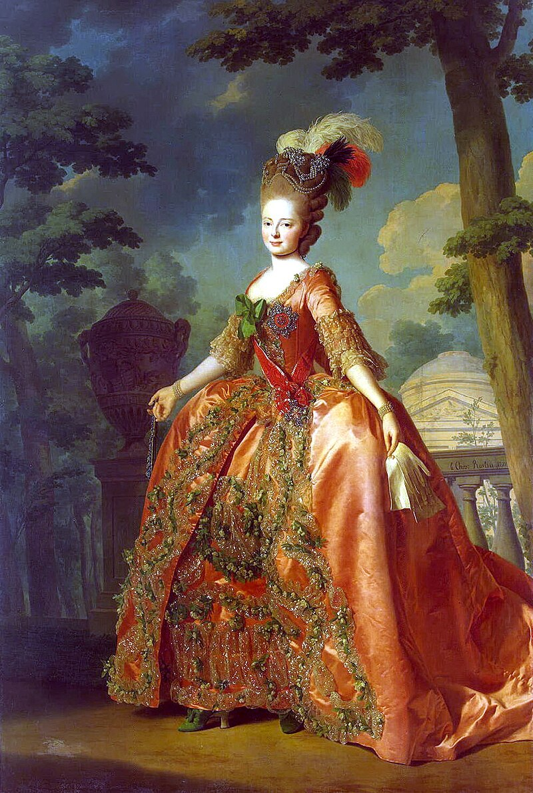
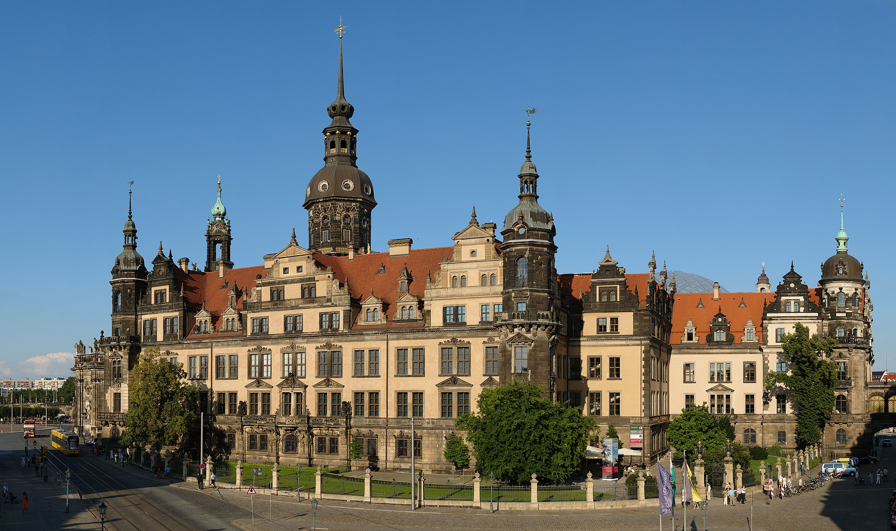
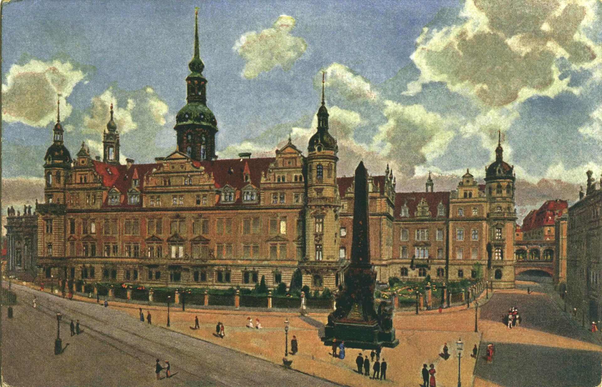
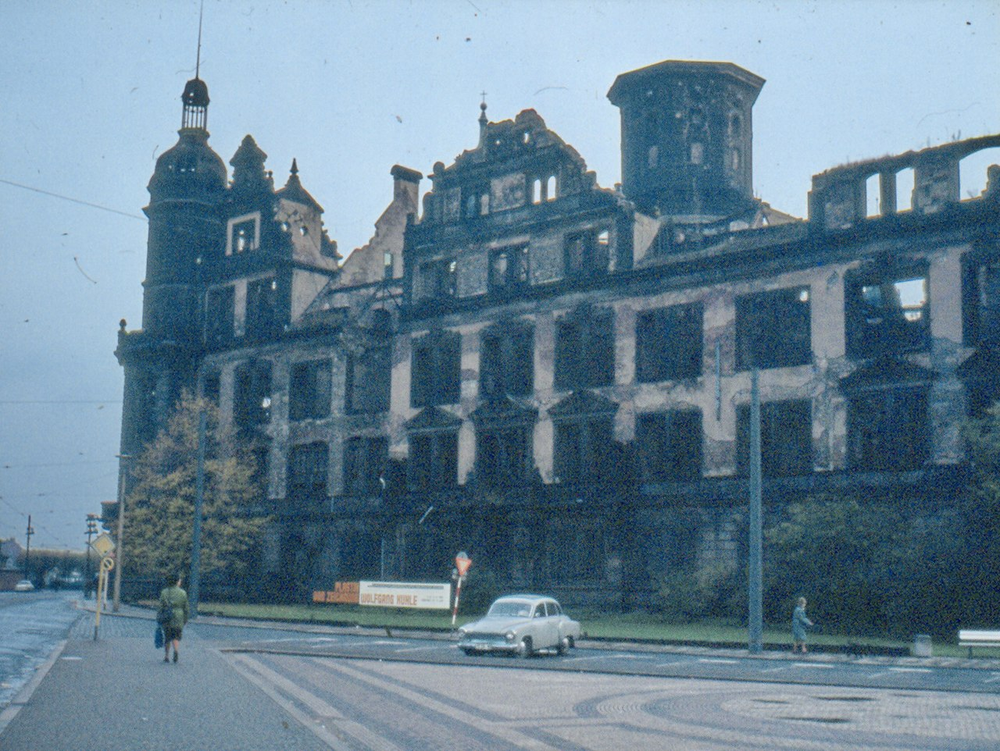
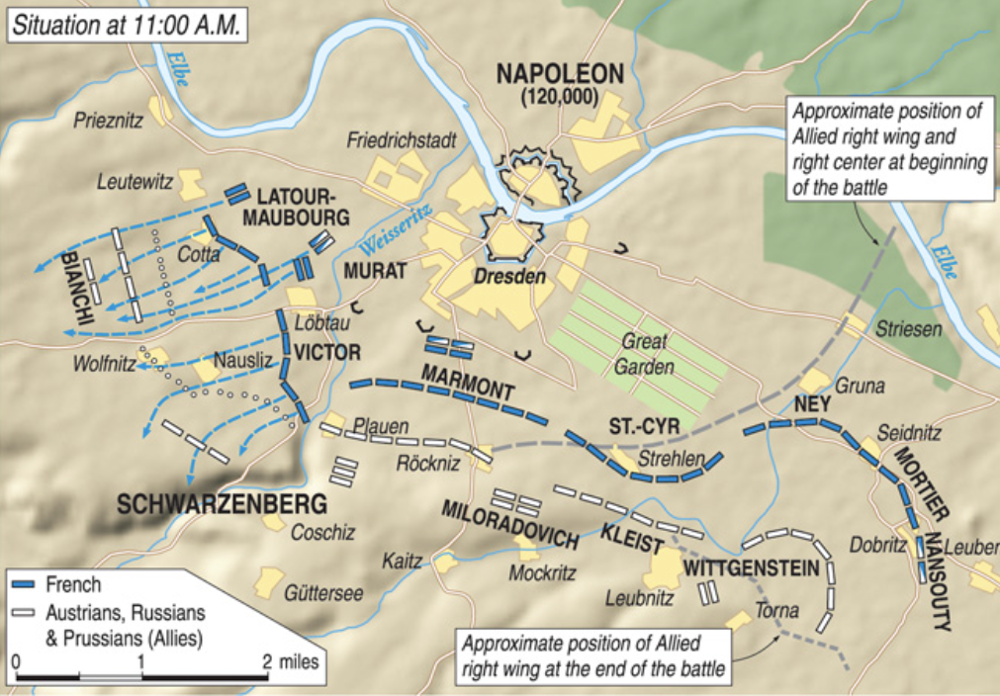
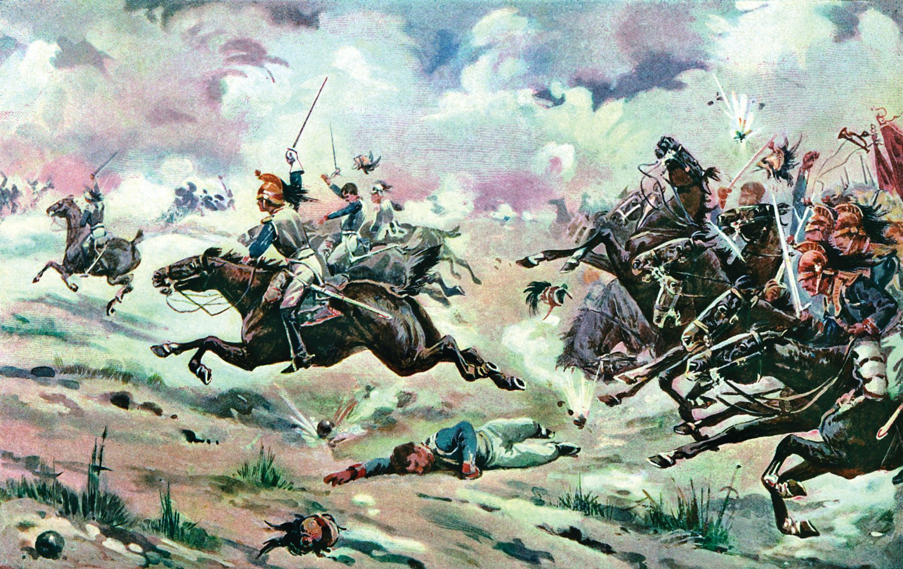
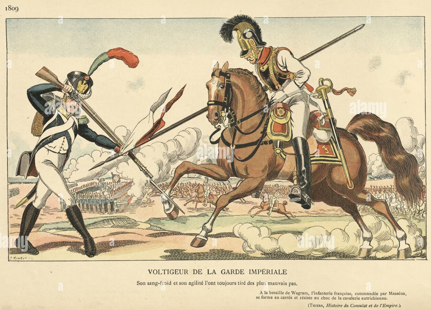

드레스덴 전투 (8) - 폭우 속의 부싯돌
게시: 2024-04-08T06:30:22+09:00
보헤미아 방면군이 우물쭈물하다 좋은 기회를 다 놓치고 나폴레옹이 몰고온 증원군과 불필요했던 혈투를 벌이던 8월 26일, 드레스덴 남동쪽 엘베강 상류의 피르나에서는 또다른 전투가 벌어지고 있었습니다. 피르나 바로 맞은 편 엘베강 우안에서 대기 중이던 방담은 나폴레옹의 지시에 따라, 드레스덴 방향에서 전투의 포성이 격렬해지자 즉각 강을 건너 피르나 점령에 나섰던 것입니다. 당시 피르나를 지키고 있던 것은 뷔르템베르크 공작 오이겐(Friedrich Eugen Carl Paul Ludwig von Württemberg)이 이끄는 1만2천의 러시아군이었습니다. 그에 비해 방담의 병력은 제1군단 거의 전체로서 약 3만5천의 대군이었습니다. 당연히 상대가 되지 않았고, 오이겐도 무의미한 혈투를 벌이기보다는 일단 후퇴한 뒤 드레스덴 쪽의 본진에 증원군을 요청했습니다.

(1813년 당시 불과 25세였던 뷔르템베르크의 오이겐 공작입니다. 아시다시피 뷔르템베르크는 라인연방의 주요 왕국 중 하나로서 나폴레옹의 위성국이었습니다. 그런데 뷔르템베르크 공작이 연합군 소속으로서 러시아군을 지휘하고 있다? 여기서 많이들 헷갈리실 텐데, 심지어 오이겐은 뷔르템부르크 왕국 사람도 아니고 태어난 곳도 프로이센 왕국인 프로이센 사람이었습니다. 이건 당시 여러 개의 소국으로 분할되어 있던 독일권의 사정을 보여주는 단면으로서, 오이겐의 아버지이자 역시 뷔르템베르크 백작인 오이겐 (Eugen Friedrich Heinrich von Württemberg)은 당시 뷔르템베르크 국왕이던 프리드리히 1세(Friedrich Wilhelm Karl)의 친동생이었습니다. 그러니까 형은 뷔르템베르크 선제후 자리를 승계했고, 동생은 뷔르템베르크 공작이라는 칭호만 가진 채 프로이센 귀족으로 살았던 것입니다. 그나마 여기서 우리가 보는 젊은 오이겐은 자신의 고모이자 러시아 짜르 파벨 1세의 황후인 소피 도로테아(Sophie Dorothea) 덕분에 어려서부터 러시아 황궁에서 살며 러시아군에서 군 경력을 쌓았습니다. 그래서 1805년 불과 17세의 나이로 이미 러시아군 소장 계급을 달고 있었고, 보로디노 전투와 크라스노이 전투에서도 사단장으로 참전했었습니다.)

(오이겐의 후원자였던 오이겐의 고모이자 뷔르템베르크 국왕의 여동생 소피 도로테아(Sophie Dorothea)입니다. 이미 이 초상화가 그려질 때는 러시아로 시집간 이후라서 이름이 마리아 표도로브나(Maria Feodorovna)로 바뀐 상태였습니다. 그녀는 17세 때 아직 황세자이던 파벨 1세와 결혼했는데, 비록 정략결혼이지만 파벨 1세를 만나자마자 그에게 반했고 매우 사랑했다고 합니다. 이 분의 맏아들이 나폴레옹의 최대 적수인 러시아의 짜르 알렉산드르 1세입니다.)
만약 이 소식이 그 날 중으로 당도했다면 가뜩이나 공격이 제대로 풀리지 않아 안절부절하던 보헤미아 방면군 수뇌부에게는 결정타였을 것입니다. 피르나가 프랑스군에게 점령당했다는 것은 까딱하면 보헤미아로 되돌아갈 퇴로가 끊긴다는 뜻이었으니까요. 아침에 나폴레옹의 드레스덴 도착을 알게 되었을 때도 알렉산드르는 보헤미아로 되돌아가는 것이 아니라 남동쪽의 디아폴디스발더(Dippoldiswalde)로 후퇴하여 라이프치히를 노려보자고 했지만, 보헤미아로 안 돌아간다는 것과 보헤미아로 못 돌아간다는 것은 매우 다른 상황이었습니다. 다행인지 불행인지, 무슨 이유에서인지 이 소식은 바로 지척에서 벌어진 일임에도 불구하고 즉각 전달되지 않았습니다. 이러면서 해가 저물고 전투가 종료된 이후, 드레스덴에서 대치한 양군에게는 증원군이 계속해서 도착했습니다. 나폴레옹 측에게는 빅토르의 제2군단과 마르몽의 제6군단이 도착하여 약 5만의 병력이 추가되었습니다. 보헤미아 방면군에도 오스트리아군의 추가 병력이 도착하기는 했으나 고작 1만2천에 불과했습니다. 늦어졌던 오스트리아군 일부는 끝내 8월 27일 전투에도 참전하지 못했습니다. 8월 26일 사상자 및 포로는 프랑스측 약 2천에 보헤미아측 약 6천 정도로서, 양측 모두 결정적인 타격은 입지 않은 상태였습니다. 다만 프랑스측은 상당한 증원군이 추가되어 이제 12만 정도가 되었고, 보헤미아측은 약간의 증원군이 보강된 정도라서 사상자들을 제외하면 전체 병력은 크게 변화된 것이 없었습니다. 즉, 하루 전보다 프랑스군과 수적 격차가 확연히 줄어든 상태였습니다. 거기에 전날의 전투 결과 프랑스군의 사기는 크게 오른 반면 보헤미아 방면군은 매우 기가 죽어 있었습니다.

(나폴레옹이 작전안을 짰던 드레스덴 시내의 작센 왕궁입니다. 원래 13세기 초에 로마네스크 양식으로 지어진 것에 계속 증축이 이어지다 18세기 초에 바로크 양식으로 크게 개보수된 것이 오늘날의 모습입니다. 파리나 런던의 궁전에 비하면 소박한 편입니다.)

(물론 오늘날 남아있는 작센 왕궁은 1945년 2월 연합군의 드레스덴 대폭격 때 크게 파손된 것을 대대적으로 복원한 것입니다. 이 그림은 1896년의 작센 왕궁을 그린 모습입니다.)

(이 사진은 동독 공산정권 치하에서 1980년 당시 폐허로 남아있던 작센 왕궁의 모습입니다. 1960년대부터 유리창을 붙이는 등 최소한의 보수를 조금씩 시작했었고, 2019년에야 궁전의 일부를 개방했는데, 지금도 복원은 계속 중이라고 합니다.) 나폴레옹은 밤이 되자 시내의 작센 왕궁으로 돌아가 다음날의 작전을 궁리했습니다. 그는 아일라우와 보로디노 등에서 늘 그랬듯이 밤 사이에 연합군이 몰래 후퇴해버리면 어쩌나 걱정도 했지만, 나폴레옹은 야습을 꺼리는 편으로서, 혼란 속에서 벌어질 수 밖에 없는 야습보다는 자신의 관찰과 통제가 통하는 주간 전투를 선호했습니다. 더군다나 그날 밤엔 야습이 아예 불가능했습니다. 밤새 내내 거센 비가 내렸던 것입니다. 이렇게 밤새 내린 비는 엘베강의 흐름도 거세게 만들었지만, 보헤미아 방면군의 좌익과 중앙 사이를 흐르는 바이서리츠강을 거센 급류로 바꿔놓았습니다. 덕분에 전날까지는 걸어서도 건널 수 있던 시냇물이, 이젠 플라우언 마을에 놓인 다리 외에는 건널 수 없는 장애물이 되었습니다. 이 모습은 다음날 새벽 교회 종탑에 올라 망원경으로 적진을 살피던 나폴레옹의 눈에 고스란히 들어왔습니다. 나폴레옹의 관측을 쉽게 만들어주기라도 하듯이, 딱 그 때 비가 그쳤던 것입니다. 관측을 마친 나폴레옹은 밤새 짠 작전 그대로 실행을 지시합니다. 그 작전은 글자 그대로 학익진이었습니다. 나폴레옹은 수적으로 우세한 적군을 상대하기 위해 오히려 양익에서의 포위 작전을 쓰는 과감한 공격 작전을 펼쳤습니다. 그는 중앙에 생시르와 마르몽의 군단을 배치하여 적의 공격을 버텨내고, 그 사이에 좌익에는 네와 모르티에의 신참 근위대를, 그리고 우익에서는 빅토르의 군단과 뮈라의 기병대를 이용하여 거센 공세를 취하기로 한 것입니다. 어제와 마찬가지로 고참 근위대는 예비대로 두었습니다. 그에 비해 보헤미아 방면군은 밤새도록 토론을 하다 결국 지쳤는지, 매우 식상한 정통파 전술을 들고 나왔습니다. 전군의 2/3 정도를 중앙에 모아 정면 공격에 집중하고, 나머지를 좌우익에 고르게 나누어 측면을 경계하도록 한 것입니다. 결국 양측은 서로가 완전히 반대되는 작전을 구사한 셈인데, 사실 누구의 작전이 더 기묘한지보다는 어느 쪽이 더 강한지가 더 중요했습니다. 전투는 프랑스측의 선공으로 시작되었습니다. 아침 6시, 네와 모르티에가 보헤미아 방면군의 우익인 비트겐슈타인을 공격한 것입니다. 좌익과 우익에서는 오히려 프랑스군이 수적 우위를 가지고 있었는고 프랑스군의 신참 근위대가 정예 병력답게 거침없이 공격에 나섰는데도, 그들을 막아선 러시아군과 프로이센군도 만만한 상대는 아니었습니다. 비트겐슈타인은 프랑스군의 공격을 3번이나 막아내며 로이프니츠(Leubnitz) 마을과 자이드니츠(Seidnitz) 마을을 사수했습니다. 그러나 결국 승부를 가른 것은 역시나 포병대였습니다. 프랑스군의 포병대는 전날에 이어 27일에도 보헤미아 방면군의 포병대에 비해 확실한 우위를 보이며 화약을 적시는 빗속에서도 적군을 마구 때려눕혔습니다. 비트겐슈타인은 결국 밀릴 수 밖에 없었고, 좌익의 러시아군과 프로이센군은 퇴로를 걱정하며 12시 경 후퇴했습니다.

(8월 27일 오전 11시 경의 전황입니다.) 뮈라와 빅토르가 맡은 프랑스군 우익의 공격은 훨씬 쉬웠습니다. 아직 단련되지 않은 오스트리아군을 상대하는 여기서도 프랑스군이 수적 우위를 가진데다 이 오스트리아군은 비로 인해 급류가 된 바이서리츠강에 의해 중앙군과 완전히 격리된 상태였기 때문이었습니다. 크게 4갈래 방향으로 공격에 나선 빅토르의 보병 사단들은 오스트리아군을 3개 덩어리로 고립시켰고, 그렇게 분산 고립된 오스트리아군을 뮈라가 이끄는 기병대가 사정없이 덮쳤습니다. 오스트리아군도 바보는 아닌지라 기병대의 돌격에 저항하기 위해 보병방진을 만들었으나, 쏟아지는 비가 문제를 일으켰습니다. 이 시대의 전투에서 비오는 날의 머스켓 소총은 사실상 발포가 되지 않았습니다. 부싯돌은 물론 발화접시의 화약까지 다 젖어버렸기 때문이었습니다. 발사가 안되는 머스켓 소총을 든 보병방진은 여기저기서 기병대에게 짓밟혔습니다. 결국 오후 2시 정도까지 바이서리츠강 서쪽의 오스트리아군은 약 1만2천의 포로를 남기고 후퇴해야 했습니다. 이때 이렇게 프랑스군을 도와준 폭우가 불과 며칠 후에 생각치 못했던 결과를 낳을 줄은 아마 다들 몰랐을 것입니다.

(드레스덴 전투에서 오스트리아군을 향해 돌격하는 프랑스군의 흉갑 기병들입니다. 실제로는 대부분 미숙한 기수들로 이루어진 기병대라서, 저렇게 멋있게 말을 달리지는 못했을 것입니다.)

(이건 1809년 오스트리아군 기병대에 맞서는 프랑스 근위대 유격병의 모습을 그린 것인데, 창기병의 돌격을 저렇게 총검술로 가뿐히 젖혀내는 보병이라니 좀 비현실적입니다. 저 배경에 오스트리아 기병들의 돌격에 맞서 방진을 만든 프랑스 보병들의 모습이 그려져 있습니다. 당시 기병들은 권총을 휴대하기도 했지만, 어차피 달리면서 재장전하는 것이 불가능했으므로 사실상 화기의 사용은 포기한 상태였습니다. 그래서 비가 오는 날이면 더욱 기병에게 유리했습니다.) 이렇게만 보면 보헤미아 방면군의 좌익이 완전히 무너진 이유는 하필 폭우가 쏟아진데다 뮈라의 기병 돌격이 매우 효과적이기 때문인 것처럼 보입니다. 그러나 이건 이해가 가지 않는 일입니다. 저렇게 적의 기병대가 돌격해오면 아군 보병이 방진을 짜는 동시에 아군 기병대가 뛰어나가 맞대응을 하는 것이 상식이었습니다. 대체 오스트리아군 기병대는 뭘 하고 있었던 것일까요? Source : The Life of Napoleon Bonaparte, by William Milligan Sloane Napoleon and the Struggle for Germany, by Leggiere, Michael V With Napoleon's Guns by Colonel Jean-Nicolas-Auguste Noël https://warfarehistorynetwork.com/article/napoleons-last-great-victory-the-battle-of-dresden/ https://en.wikipedia.org/wiki/Battle_of_Dresden http://www.historyofwar.org/articles/battles_dresden_27_aug.html https://en.wikipedia.org/wiki/Imperial_Guard_%28Napoleon_I%29 https://en.wikipedia.org/wiki/Duke_Eugen_of_W%C3%BCrttemberg_(1788%E2%80%931857) https://en.wikipedia.org/wiki/Maria_Feodorovna_(Sophie_Dorothea_of_W%C3%BCrttemberg) https://en.wikipedia.org/wiki/Dresden_Castle https://www.alamy.com/napoleonic-wars-military-uniforms-french-voltigeur-fighting-a-cavalry-lancer-an-infantry-square-formation-in-the-background-resisting-a-cavalry-charge-the-voltigeurs-of-the-guard-along-with-their-sister-regiments-the-tirailleurs-formerly-the-tirailleurs-grenadiers-and-conscrit-grenadiers-regiments-provided-the-skirmish-screen-for-the-chasseurs-and-grenadiers-of-napoleons-old-guard-image345714257.html